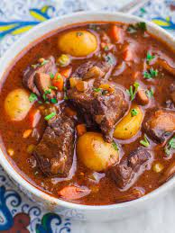

Meat Recipe

Description
This recipe is about how to make a delicious beef stew which will make you lick your hands for more. It doesn't require any expensive or explicit ingridients.
Ingridients
- I hate to say this but you do require meat
- Cooking oil
- Salt
- Onions
- Tomatoes
- Water
- Chilli
- Coriander
- Carrot
Steps
- Boil the meat to to a tender taste.
- Pour oil on a pan and add onions while gently heating the pan
- Add the tender meat in the pan and start mixing
- Add tomatoes and chilli and wait to form a thick paste
- Add cut carrot and coriander
- Add little water to get soup
- Wait a few minutes before serving